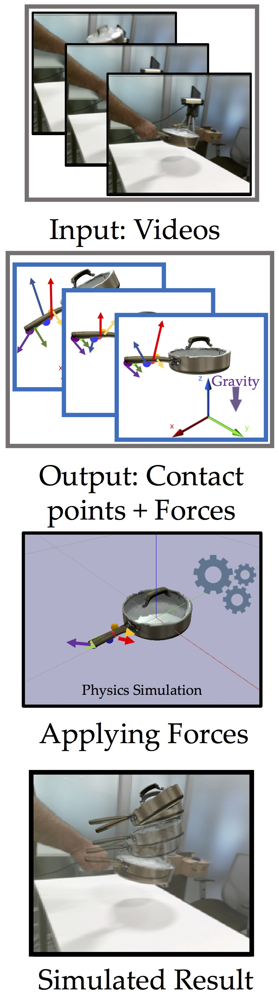

Here are some of the research projects I have been working on.

Use the Force Luke! Learning to Predict Physical Forces by Simulating Effects
K Ehsani, S Tulsiani, S Gupta, A Farhadi, A Gupta (CVPR20, Oral Presentation)
When we humans look at a video of human-object interaction, we can not only infer what is happening but we can even extract actionable information and imitate those interactions. On the other hand, current recognition or geometric approaches lack the physicality of action representation. In this paper, we take a step towards more physical understanding of actions. We address the problem of inferring contact points and the physical forces from videos of humans interacting with objects. One of the main challenges in tackling this problem is obtaining ground-truth labels for forces. We sidestep this problem by instead using a physics simulator for supervision. Specifically, we use a simulator to predict effects, and enforce that estimated forces must lead to same effect as depicted in the video.
Our quantitative and qualitative results show that:
We can predict meaningful forces from videos whose effects lead to accurate imitation of the motions observe.
By jointly optimizing for contact point and force prediction, we can improve the performance on both tasks in comparison to independent training.
We can learn a representation from this model that generalizes to novel objects using few shot examples.
Watching the World Go By: Representation Learning from Unlabeled Videos
D Gordon, K Ehsani, D Fox, A Farhadi
Recent single image unsupervised representation learning techniques show remarkable success on a variety of tasks.
The basic principle in these works is instance discrimination: learning to differentiate between two augmented versions of the same image
and a large batch of unrelated images. Networks learn to ignore the augmentation noise and extract semantically meaningful representations.
Prior work uses artificial data augmentation techniques such as cropping, and color jitter which can only affect the image in superficial ways
and are not aligned with how objects actually change e.g. occlusion, deformation, viewpoint change. In this paper, we argue that videos offer this
natural augmentation for free. Videos can provide entirely new views of objects, show deformation, and even connect semantically similar but visually
distinct concepts. We propose Video Noise Contrastive Estimation, a method for using unlabeled video to learn strong, transferable single image representations.
We demonstrate improvements over recent unsupervised single image techniques, as well as over fully supervised ImageNet pretraining, across a variety
of temporal and non-temporal tasks.
Learning to Learn how to Learn: Self-Adaptive Visual Navigation using Meta-Learning
M Wortsman, K Ehsani, M Rastegari, A Farhadi and R Mottaghi (CVPR19, Oral Presentation)
There is a lot to learn about a task by actually attempting it! Learning is continuous, i.e. we learn as we perform. Traditional navigation approaches freeze the model during inference (top row in the intuition figure above). In this paper, we propose a self-addaptive agent for visual navigation that learns via self-supervised interaction with the environment (bottom row in the intuition figure above).
SAVN is a network that
Learns to adapt to new environments without any explicit supervision,
Uses meta-reinforcement learning approach where an agent learns a self-supervised
interaction loss that encourages effective navigation,
And shows major improvements in both success rate and SPL for visual navigation in novel scenes.
K Ehsani, R Mottaghi, A Farhadi (CVPR18, spotlight)
Humans have strong ability to make inferences about the appearance of the invisible and occluded parts of scenes. For example, when we look at the scene on the left we can make predictions about what is behind the coffee table, and can even complete the sofa based on the visible parts of the sofa, the coffee table, and what we know
in general about sofas and coffee tables and how they occlude each other.
SeGAN can learn to
Generate the appearance of the occluded parts of objects,
Segment the invisible parts of objects,
Although trained on synthetic photo realistic images reliably segment natural images,
By reasoning about occluder-occludee relations infer depth layering.
Who Let The Dogs Out? Modeling Dog Behavior From Visual Data
K.Ehsani, H.Bagherinezhad, J. Redmon, R. Mottaghi, A. Farhadi (CVPR18)
Dogs are intelligent. Let's learn from them! We introduce DECADE, a dataset of ego-centric videos from a dog’s perspective as well as her corresponding movements.
In this paper we propose a model that can
Learn to act like a dog (Predict the dog’s future moves),
Learn to plan like a dog (Estimate a sequence of movements that take the state of the dog’s world from what is observed at a given time to a desired observed state),
Learn from a dog (Exploring the potentials of using the dog's movements for representation learning),